声明：本篇笔记部分摘自《Web前端技术 - 航空工业出版社》 ，遵循CC BY 4.0协议 。
CSS（Cascading Style Sheets，层叠样式表）是一种用于描述网页外观和格式 的样式表语言，具有控制网页样式 、实现结构与样式分离 、提升用户体验 三大功能。
CSS3样式表由一个或多个CSS3样式组成，，每个CSS3样式由选择器和声明组成。
选择器：用于匹配H5中的不同元素，可以是标签名、类名、ID等。
声明：用于命令浏览器如何渲染指定的对象，由属性和属性值两部分组成。
属性：用于设置元素样式的项。
属性值：设置属性效果的参数，可以是带单位的数字或关键字。
CSS3的注释格式： /* 注释内容 */
<标签名 style="属性1: 属性值1; 属性2: 属性值2; ···"></标签名>
1 2 3 4 5 6 7 <style > 选择器{ 属性1 : 属性值1 ; 属性2 : 属性值2 ; ··· } </style >
为保证浏览器提前识别解析CSS样式，一般将内嵌样式表写在HTM34L文件的<head>之中，<title>之后 。
将样式放在独立的CSS文件中，使用<link>标签进行链接:
1 <link href ="CSS3文件路径" type ="text/css" rel ="stylesheet" />
选择器
格式
举例
备注
标签选择器 标签名 {}p {font-size: 20px; color: lightBlue;}
类选择器 .类名 {}.author {font-size: 20px; color: lightBlue;}
ID选择器 #ID {}#stu1 {font-size: 20px; color: lightBlue;}
通配选择器 * {}* {margin: 0; padding: 0; border: 2px;}用于选择所有标签
注：可以为同一个元素设定多个class类名，通过多个选择器分别控制样式，如下所示：
1 2 3 4 5 6 7 8 9 10 11 12 13 14 15 16 <div id ="container1" > <div class ="item item-1" > 1</div > <div class ="item item-2" > 2</div > </div > <style > .item { font-size : 2em ; text-align : center; border : 1px solid #e5e4e9 ; } .item-1 { background-color : #ef342a ; } </style >
选择器
格式
范围图示
备注
交集选择器 标签名.类名 {}标签名#ID {}同时满足两个选择器的标签
前者必须为标签选择器；后者为类选择器或ID选择器
并集选择器 选择器1，选择器2，选择器3，··· {}所有满足选择器的标签
有利于减少CSS样式的冗余，提高网页加载速度
后代选择器 选择器1 选择器2 {}选择器1选择器2 选择器2
选择所有后代元素 ，包括直接子元素和更深层级的元素
子代选择器 选择器1>选择器2 {}选择器1选择器2
只选择直接子元素 ，不会深入到更低层级的后代
相邻选择器 选择器1+选择器2 {}根元素选择器2
选择元素1之后紧接着的 兄弟元素元素2
兄弟选择器 选择器1~选择器2 {}根元素选择器2 选择器2
选择元素1之后的所有 元素2
性质
分类
选择器
示例
描述
动态伪类选择器
锚点伪类
:link
a:link {clolr: blue;}
只用于设置链接访问前的样式
:visited
a:link {clolr: red;}
只用于设置链接访问后的样式
行为伪类
:hover
a:hover {color: blue;}
设置鼠标悬浮的样式
:active
a:active {color: red;}
设置鼠标按下但未松开时的样式
:focus
a:hover {color: blue;}
设置元素获得焦点时的样式
否定伪类选择器
否定
:not()
grid:not(p) {color: red;}
匹配非指定元素或选择器的每个元素
状态伪类选择器
启用
:enabled
input[type="text"]:enabled {color: blue;}
匹配每个被启用的元素(多用于表单)
禁用
:disabled
input[type="text"]:disabled {color: grey;}
匹配每个被禁用的元素(多用于表单)
选中
:checked
input[type="button"]:checked {color: blue;}
匹配每个被选中的元素(多用于按钮、复选框)
备注：
同时使用动态伪类选择器时，:hover必须在:link和:visited之后，:active必须在:hover之后；否则对应的样式会无法显示。
四者的顺序为：a:link -> a:visited -> a:hover -> a:active *（简记：LoVe HAte）。
结构伪类选择器不常用，此处略去。常见cursor属性(鼠标指针样式)见下表：
用于定义元素指定部分 的样式，使用双冒号 为前缀。
基本格式：选择器::伪类名 {属性1：属性值1; 属性2：属性值2; ···}
选择器
描述
示例
::before在选定的元素前添加内容
p::before {content: "CSS3";}
::after在选定的元素后添加内容
p::after {content: "CSS3";}
备注：使用伪元素选择器添加的内容无法被鼠标框选选中。
选择器
描述
示例
E[attr]用于匹配所有拥有attr属性的E元素，无论属性的值是多少
a[id] {color: blue;}a[id][class] {color: blue;}
E[attr="value"]用于匹配所有attr属性值为value的E元素
a[id="first"] {color: red;}a[id="first"][class="nav"] {color: red;}
E[attr~="value"]用于匹配attr属性列表中包含value的E元素
a[title~="web"] {color: red;}
E[attr^="value"]用于匹配attr属性列表以value开头的E元素
a[title^="web"] {color: red;}
E[attr$="value"]用于匹配attr属性列表以value结尾的E元素
a[title$="web"] {color: red;}
E[attr*="value"]用于匹配attr属性列表中包含"value"字符串的E元素
a[title*="web"] {color: red;}
E[attr|="value"]用于匹配attr属性为"value"或以以"value"开头的E元素
a[title|="web"] {color: red;}
继承性：在HTML5结构中，后代元素会继承祖先元素的CSS3样式(不可继承边框、边界、背景、定位、布局、尺寸等)。
层叠性：为一个元素设置多个样式时，高优先级的样式会覆盖低优先级的样式。
优先级递减排序：行内样式 > ID选择器 > 类、伪类、属性选择器 > 标签选择器 > 通配选择器 > 继承样式
权重相同时遵循就近原则
绝对长度：是固定不变的长度，多用于可以固定大小或位置的情况
cm - 厘米
mm - 毫米
in - 英寸(inch)
px - 像素(pixel) [常用] pt - 点(point)
pc - 派卡(pica)
换算关系：1in = 2.54cm = 25.4 mm = 72pt = 6pc
相对长度：是相对于另一个长度属性的长度，多用于响应式布局
em - 相对于元素的字体大小
ex - 相对于当前字体的高度
ch - 相对于"0"的宽度
rem - 相对于根元素的字体大小
vw - 相对于视口(浏览器窗口)宽度的1%
vh - 相对于视口(浏览器窗口)高度的1%
vmin - 相对于视口(浏览器窗口)宽度的1%
vmax - 相对于视口(浏览器窗口)宽度的1%
% - 相对于父元素的尺寸 [常用]
颜色值
颜色名称 ：直接写明元素的颜色单词
例：p {background-color: lightblue;}
十六进制值表示 ：由#符号开头，后面跟随六个十六进制数字，分别表示红、绿、蓝三种颜色的值。
RGB 值 ：使用rgb()函数来定义颜色，参数为红、绿、蓝三种颜色的值，范围从 0 到 255。
例： p {color: rgb(255, 99, 71);}
在不同的分辨率下，像素点的大小是不同的。所以同一个网页，以px作长度单位时，在不同的分辨率下显示的大小是不同的。在低分辨率下，像素点较大，细节不够清晰，显示的页面也大，但模糊不清。
字体样式
格式：font-family: “”;
示例：p {font-family: "宋体"}、span {font-family: "Times New Roman"}
备注："Times New Roman"多用于数字的字体
字号(字体大小)样式
格式：font-size: 值 | 关键字;
示例：p {font-size: 20px;}
备注：
值可以取以px、em、pt等为单位的数值，也可以取基于父元素或默认值的百分比。
关键字包括xx-smal、x-small、small、large、x-large、xx-large，以及根据父元素字体大小变化的smaller和larger。
字体粗细样式：
格式：font-weight: normal(正常) | bold(加粗) | lighter(减细) | number(100-900之间的九个数值);
示例：p {font-weight: blod;}
备注：Win环境下，文本默认字体为"微软雅黑"，仅支持400与700两种字粗，设置为其他值时会用这两种效果替换，可能看不出变换。
字体风格样式：
格式：font-style: normal(正常) | italic(斜体) | oblique(倾斜)
示例：span {font-style: italic;}
备注：oblique适用于没有斜体样式的字体，将其强制倾斜。
项目
格式
备注
缩进 text-indent: 0 | 缩进长度;
长度可以是pm、em、pt、%
水平对齐 text-align: left | right | center | justify(两端对齐);
修饰 text-decoration: none | underline | overline | line-through(删除线);
省略 text-overflow: clip(不省略) | ellipsis(省略)
隐藏文本宽度过大溢出的部分，用…标记
字符间距 word-spacing: normal(无间距) | 间距值;
字母之间的间距，默认为0
单词间距 letter-spacing: normal(正常间距) | 间距值;
单词之间的间距
行高 line-height: normal(正常行高) | number(当前字体高度的倍数) | 高度值;
自动换行 word-break: normal(浏览器规则) | break-all(可截断单词) | keep-all(只在空格处换行);
空白符处理 white-space: normal(忽略空白) | nowrap | pre | pre-line | pre-wrap;
较为复杂，用时再查询规则，此处忽略。
溢出内容处理 overflow: visible(溢出在边框外) | hidden | scroll(始终提供滚动条) | auto(有溢出时提供滚动条);
项目
格式
备注
宽度 width: 宽度值;
高度 height: 高度值;
边框宽度 border-width: 宽度值*4;
边框风格 border-style: 样式*4;
样式 = solid(单实线) | dotted(点线) | dashed(虚线) |
边框颜色 border-color: 颜色值*4;
颜色值的表示见本篇笔记的 三、1 部分
不透明度 opacity: 0~1;
数值越高越不透明
圆角 border-radius: 值*4;
在中间添加-top-right-等可单独设置每个角的圆弧大小
阴影 box-shadow: 水平位置 垂直位置 模糊距离 阴影尺寸 outset | inset;
可直接使用阴影效果生成工具Neumorphism.io 、Box Shadows 等直接生成需要的CSS阴影样式
备注：
属性值列表中标注了*4的，表示可以设置1-4个值，分别控制：上-右-下-左 | 上-左右-下 | 上下-左右 | 上-右-下-左 。同时，可以在属性项中加上-方向-指定设置其中某个方向上的样式。
例：img {border-top-width: 2px;}，方向可选：left | right | top | bottom
使用border属性可以在同一个声明中统一设置边框宽度、风格和颜色。
例： img {border: 2px solid black;}
项目
格式
备注
背景颜色 background-color: transparent | 颜色值;
背景图像 background-image: none | url(图片路径);
如body {background-image: url(bg.png);}
显示方式 background-repeat: repeat | repeat-x |
repeat表现为重复，round表现为缩放填充，
起始位置 background-position: 关键字 | 偏移量;
水平 垂直格式，关键字如left top，偏移量如0% 0%或0pos 0pos(单位为px或em)，缺省其中一个时，缺省项为center或50%
固定方式 background-attachment: scroll(相对元素固定) | fixed(相对浏览器窗口固定) | lcoal(相对元素内容固定);
备注：
可使用background属性在同一声明中设置多个属性值, 其中必须包含颜色或图像，其他可选
如：body {background: url(bg.png) repeat scroll;}
项目
格式
备注
项目符号
list-type: 关键字;
关键字包括：disc(●) | circle(○) | none | square(■) | decimal(1) | lower-alpha(a) | upper-alpha(A) | lower-roman(i) | upper-roman(Ⅰ) | cjk-ideographic(一)
项目符号位置
list-style-position: outside | inside;
outside表示符号位于文本左侧，且在文本以外；inside表示符号位于文本以内，文本根据符号位置对齐
符号自定义图片
list-style-image: none | url(图片路径);
备注：
常用于取消列表的默认样式。
使用list-style属性在同一声明中设置多个属性值。
一般通过设置载体 的样式来设置超链接的样式，载体可以是图片、文本等，相关样式已在前文给出。
修改超链接访问前后的样式，使用动态伪类选择器 实现。
项目
格式
备注
标题位置
caption-side: top | bottom;
边框合并
border-callapse: saparate(分开) | collapse(合并);
边框间距
boder-spacing: 间距值;
写一个值控制所有方向，两个值分别控制水平和竖直方向；间距不可取负值
显示空单元格
empty-cells: show | hide;
选择hide时，不绘制空单元格的边框
渲染方法
table-layout: auto | fixed;
默认情况下，列宽由单元格内容决定；设为fixed时，列宽由表格宽度和列宽度确定
“设置表单控件获得焦点时 的样式需要使用:focus选择器。设置单选钮和复选框 的样式时，可以先将它们隐藏，再通过设置其提示信息的样式来实现单选钮与复选框的功能。此时就需要使用伪类选择器:checked匹配选中的单选钮或复选框，接着搭配使用其他选择器匹配选中的单选钮或复选框的提示信息，然后设置相应提示信息的样式，就可以通过提示信息的样式变化提醒用户选择了哪个选项，从而在隐藏单选钮或复选框的同时 不影响使用它们的功能。” ——《Web前端技术》P137
HTML中大部分的元素(<html>、<body>、<div>等)都可以认为是一个盒子。
盒子由内容与边框组成；内容与边框之间的距离为内边距，边框与其他盒子的边框之间的距离为外边距。
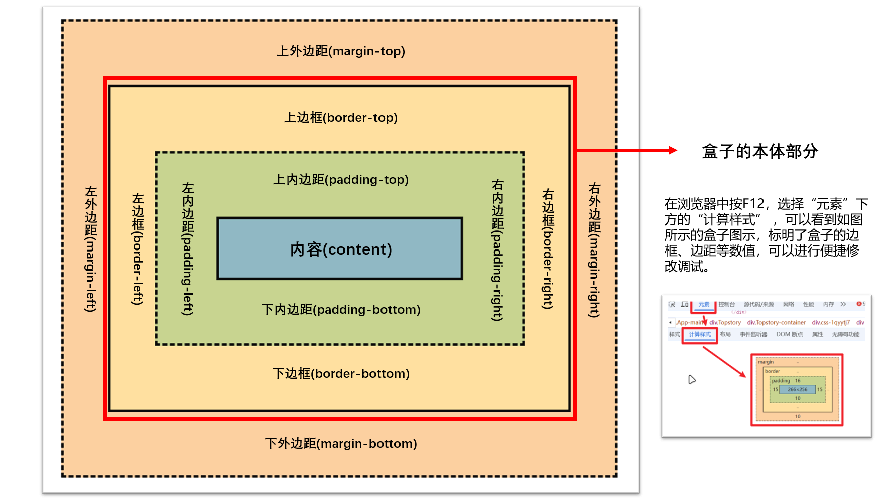
盒子的内容
使用属性width、height设置内容的宽度和高度。
通过box-sizing: content-box(作用于内容区域) | border-box(作用于边框及内部区域);来设置width与height属性的作用范围。
盒子的边框：
使用属性设置盒子模型的边框。具有子属性border-width、border-style、border-radius和border-color分别用于设置边框的宽度、样式、圆角和颜色等样式。
盒子的内边距：
格式：padding: 边距值*4 | auto;，默认值为0，选择auto时，浏览器自动计算内边距。
内边距可以用于撑大盒子的范围，盒子的宽高会跟随内边距变化。盒子的背景也会延伸到内边距范围(上图浅绿色部分)，而不仅仅是局限于内容的范围(上图浅蓝色部分)。
盒子的外边距：
格式：margin: 边距值*4 | auto;，默认值为0，选择auto时，浏览器自动计算外边距。
块级元素(<h1>~<h6>、<p>、<div><ul>、<ol>、<li>、<dd>、<dt>、<dl>等)
在页面中独占一行，宽度和高度默认填满父元素，通过width和height属性设置宽度和高度。
即使设置了宽度，仍然会独占一行。 可以用padding和margin设置内外边距。
行内元素(<a>、<strong>、<b>、<em>、<i>、<del>、<s>、<ins>、<u>、<span><img>、<input>、<select>、<textarea>、<br/>等)
在页面中按从左到右、从上到下的顺序布局，不会独占一行。宽度和高度取决于内容的大小，无法 通过width和height设置盒子的宽高。
对行内元素应用上、下方向上的外边距不会显示效果。 (行内元素无法拉高父元素的高度)
行内块元素(显示在同一行的块级元素)
可以为其设置宽高、边距、边框等属性。
使用display元素设置元素的类型：display: none | block(块级元素，自带换行符) | inline(行内元素) | inline-block(行内块元素)
不使用任何与排版或定位相关的CSS规则时，各个元素默认的排版方式 ，盒子排成序列，同级盒子在父级盒子中按照行内或者块级元素的规则进行排列。
这样的页面类似于河流的干流与支流，故称之为"标准流 "或"文档流 "。
在浮动排版中，块级元素的宽度由父级盒子的(其他)内容与内边距决定，而不再独占一行或占满父元素宽度。
任何显示在浮动元素下方的元素都会在网页中向上移动，如果上移的元素中包含文本，文本会环绕在浮动元素的周围，多用于图文混排效果。
项目
格式
备注
浮动设置
float: none | left | right;
left表示元素向左移动，right表示元素向右移动(见下表)，此属性在图片元素中设置
浮动清除
cear: none | left | right | both;
防止元素不必要的上移导致排版混乱(如下图所示)，此属性在文本元素中设置
方向
图示
未设置图片浮动
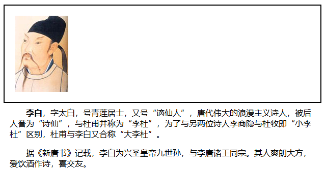
设置图片向左浮动
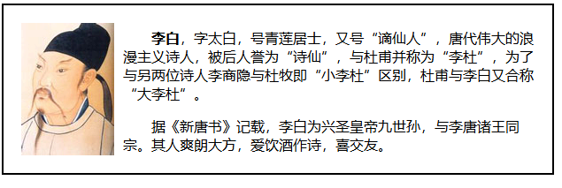
设置图片向右浮动
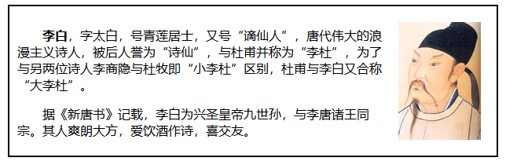
元素设置为浮动后，父元素高度不能再根据子元素自适应拓展，即出现“高度塌陷”的问题。如下图所示：
为了解决这样的问题，可以给图片元素添加一个设置了浮动清除的非浮动兄弟元素 (如<div style=" clear: both; height: 0px;"></div>)。
此时，父元素识别并根据兄弟元素进行高度拓展，解决了高度塌陷的问题。
定位方式：position: static | relative | absolute | fixed;
模式
名称
描述
图示 (在各模式下，对box2应用右下方向各50px的偏移)
static
静态定位
默认定位模式，元素按照标准流显示
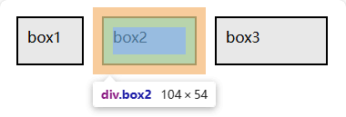
relative
相对定位
元素以自身在标准流布局中的位置 为基准进行定位，原有的位置会留空
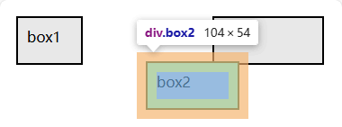
absolute
绝对定位
元素以上一个已定位元素 为基准进行定位，原有的位置不再保留，与基准元素堆叠在一起
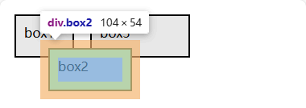
fixed
固定定位
元素以浏览器窗口 为基准进行定位，原有的位置不再保留，也不会随页面滚动(常用于侧边广告、"回到顶部"按钮等元素的固定)
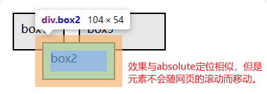
偏移量: 根据上述基准确定元素的准确位置(定位方式为static时，偏移量的设置无效)
项目
格式
左侧偏移量
left: 偏移值;
右侧偏移量
right: 偏移值;
顶部偏移量
top: 偏移值;
底部偏移量
bottom: 偏移值;
堆叠顺序：默认情况下，标准流中后出现的元素在上层。可以通过z-index属性调整堆叠关系。
属性值可以是正数、0 和负数。一般取99和-99来实现元素的置顶与置底效果。
父元素的z-index无法与子元素进行比较；想让父元素显示在子元素上方，可以将子元素的z-index设为负值。
布局的传统解决方案，基于盒状模型 ，依赖 displaypositionfloatW3C 提出了一种新的方案 —— Flex(Flexible Box, 弹性盒布局) ，可以简便、完整、响应式地为盒状模型提供灵活的布局，目前已经得到了所有浏览器的支持。
采用Flex布局的元素称为Flex容器(Flex container) ，简称 “容器” 。容器的所有子元素成为其成员，称为Flex项目(Flex item) ,简称 “项目” 。
容器默认存在两根轴：水平的主轴(main axis) 和 垂直的交叉轴(cross axis) 。
主轴的开始位置(与边框的交叉点)叫做 main startmain end
交叉轴的开始位置叫做cross start，结束位置叫做cross end。
项目默认沿主轴排列：
main size：单个项目占据的主轴空间cross size：单个项目占据的交叉轴空间
Flex容器的各个概念如下图所示：
在线演示工具 )
使用 display: inline-flex; 的声明，可以将任何一个行内元素 指定为Flex布局。
在WebKit内核的浏览器 (如Safari、iOS版本的Chrome和Edge)上使用Flex布局，应该使用 display: -webkit-flex; 这样的声明。
设为Flex布局以后，子元素的float、clear和vertical-align属性将失效。
取值
row
row-reverse
column
column-reverse
描述
从左往右，默认
从右往左
从上到下
从下到上
图示
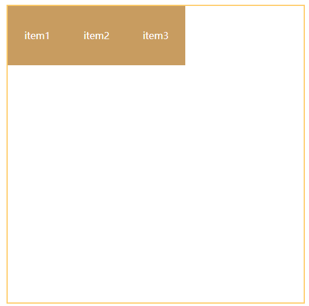
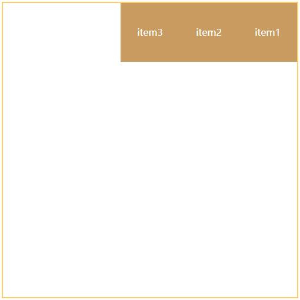
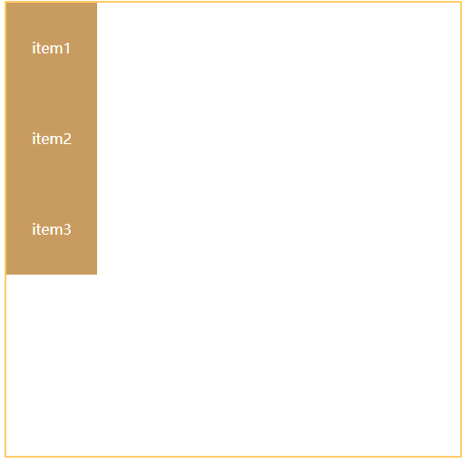
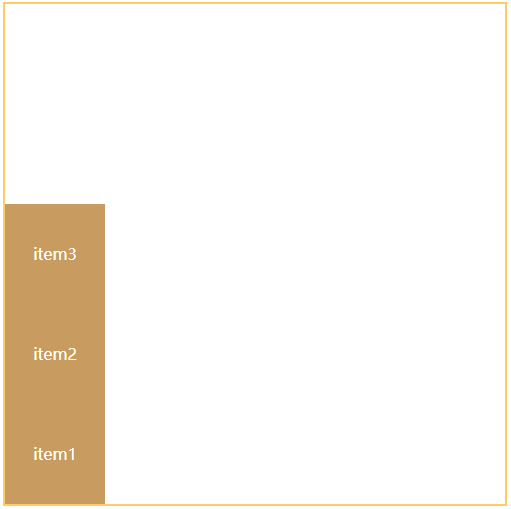
取值
nowrap
wrap
warp-reverse
描述
不换行(宽度不足时挤压内容的宽度)，默认
向下换行(新的一行在下方)
向上换行(新的一行在上方)
图示
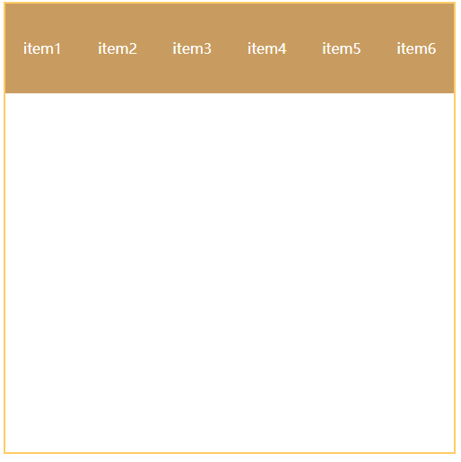
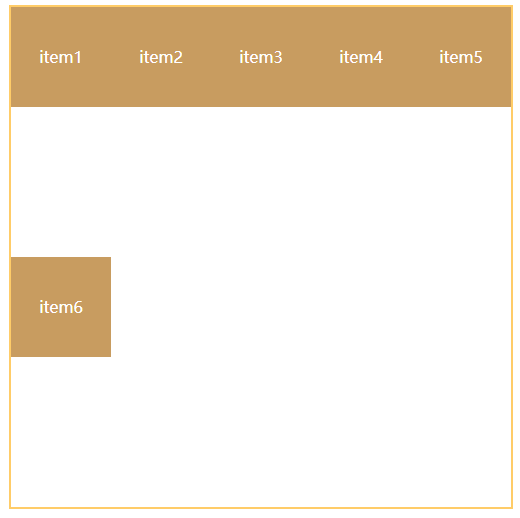
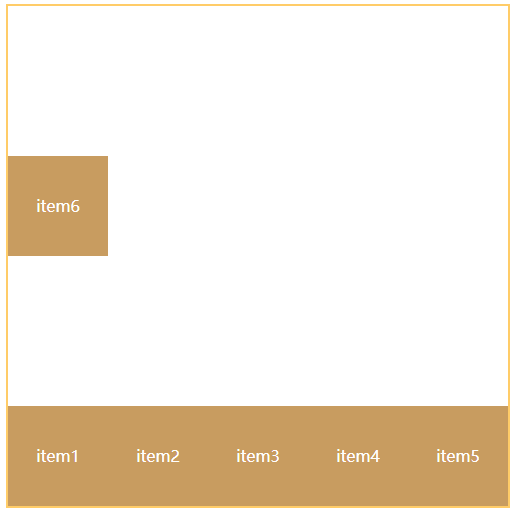
取值
flex-start
flex-end
center
space-between
space-evenly
space-around
描述
对齐主轴起点，默认
对齐主轴终点
居中对齐
分散对齐，两边紧贴
分散对齐，间距相同
分散对齐，两端间距减半
图示
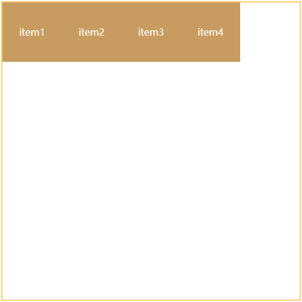
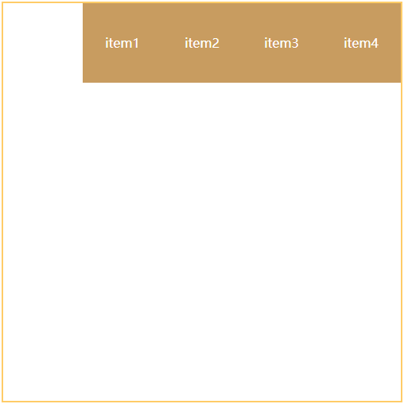
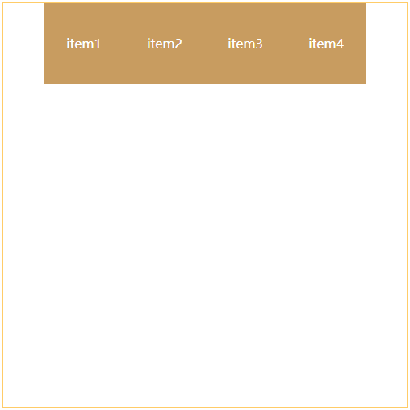
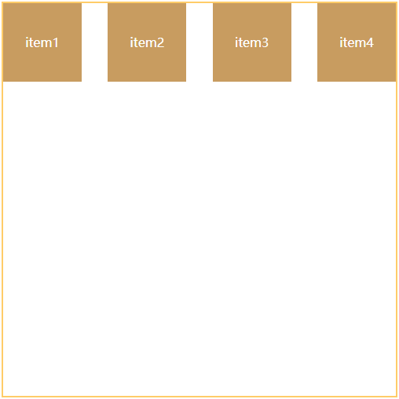
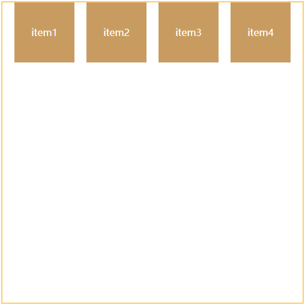
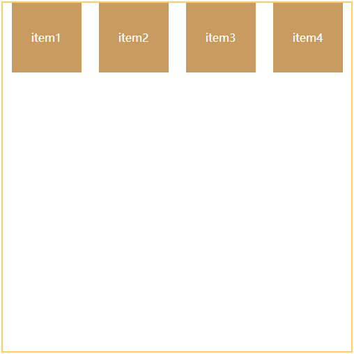
取值
flex-start
flex-end
center
baseline
stretch
描述
对齐交叉轴起点
对齐交叉轴终点
居于交叉轴为中心分布
对齐首行文字
若内容未设高度或设为auto，
图示
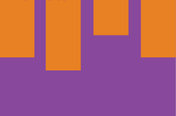
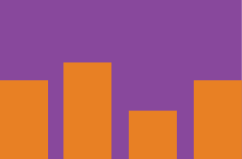
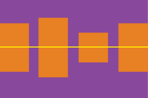
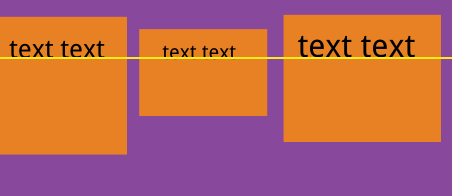
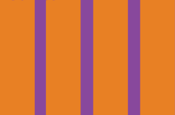
取值
stretch
flex-start
flex-end
center
space-between
space-evenly
space-around
描述
默认布局
对齐顶部
对齐底部
居中对齐
分散对齐，两边紧贴
分散对齐，间距相同
分散对齐，两端间距减半
图示
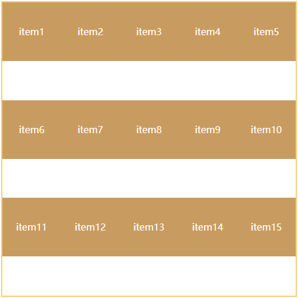
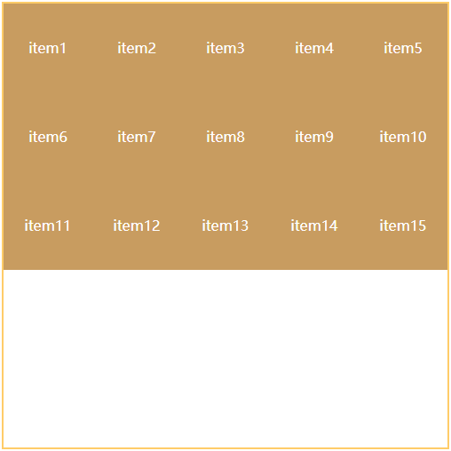
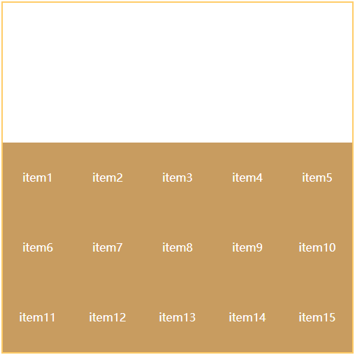
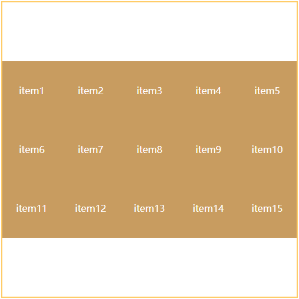
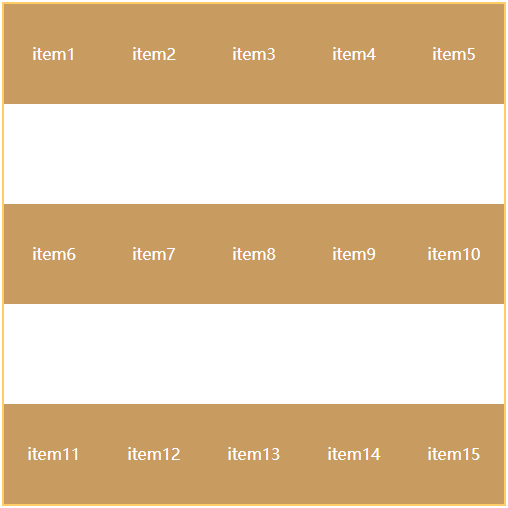
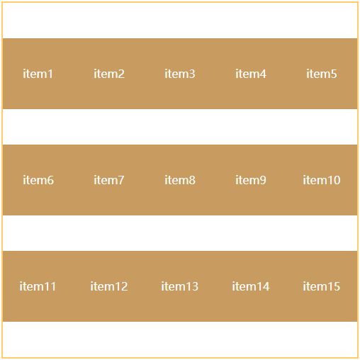
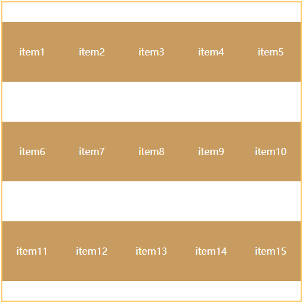
对于上述的属性，在Chrome中F12打开开发人员工具后，在“样式”部分指定某个容器为Flex布局时，会自动出现调整各项参数的窗口，调整后将新的样式复制到源码中即可("开发人员工具"只可临时修改，无法修改源代码内容)。
可以为负整数值、0和正整数值，默认为0。
使用方法类似于z-index属性，可以分别用-99,99来让某个元素置为最后一个和第一个。
默认值为auto，即项目的本来大小。浏览器根据此属性计算主轴是否有多余空间。
也可以设置为固定的数值，使项目占用固定的空间。
默认为0，不放大(不等分剩余空间)
若所有项目的flex-grow属性都为1，则它们将等分剩余空间
若某项目的flex-grow属性为2，其他项目都为1，则前者占据的剩余空间将比其他项多一倍。
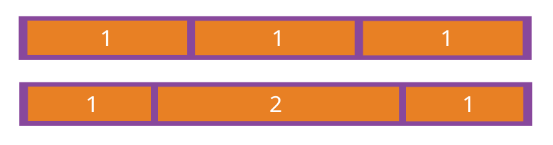
默认缩小比例为1，若空间不足，项目会缩小宽度或高度。设为负值无效。
若所有项目的flex-shrink属性都为1，当空间不足时，都将等比例缩小。
若某项目的flex-shrink属性为0，其他项目都为1，则空间不足时，前者不缩小。
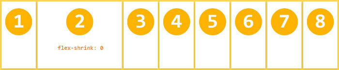
格式：flex: flex-grow属性值 flex-shrink属性值 flex-basis属性值;
两个快捷值：
auto：1 1 auto（项目大小为内容原本大小，等分剩余空间，允许缩小）。none：0 0 auto（项目大小为内容原本大小，不等分空间，不允许缩小）。
设置此属性后，会覆盖掉容器设定的align-items属性。
默认值为auto，继承容器定义的align-items属性(若无父元素则自动设为stretch).
网格布局(Grid) 是很强大的CSS布局方案,通过将网页划分并组合不同的网格，实现各种各样的布局。轴线布局 ，只能指定"项目"针对轴线的位置，可以看作是一维布局。单元格 ，然后指定"项目所在"的单元格，可以看作是二维布局。
1 2 3 4 5 <div > <div > <p > 1</p > </div > <div > <p > 2</p > </div > <div > <p > 3</p > </div > </div >
容器(container) ：指采用网格布局的区域。项目(item) ：容器内部采用网格定位的顶层 子元素。在上面的示例中，父元素<div>是容器，子元素<div>是项目；但是<p>不属于Grid容器的项目(不是父元素的顶层子元素)。
Grid布局只对容器内的项目生效。
容器里面的水平区域称为行(row) ，垂直区域称为列(column) 。各行与各列的重叠部分组成一些单元格(cell) 。
划分网格的线，称为网格线(grid line) 。水平网格线划分出行，垂直网格线划分出列。
在线演示工具 )
设为网格布局以后，容器项目的float、display: inline-block、display: table-cell、vertical-align和column-*等设置都将失效。
指定为Grid布局后，默认设定为块级元素；可以通过display: inline-grid;的声明设定为行内元素，如图所示：
分别用于指定网络布局每一列的宽度和每一行的高度()，定义了几个值就有几行/几列。如图所示：
宽度/高度可以是固定的px值，可以是相对的%值，也可以是相对的fr值，表示均分容器宽高的权重(总宽高为容器的宽高，各自的宽高比例为fr的值；类似于WPF中的<RowDefinition Height="2*">，点击查看示例 )
网格很多时，重复写多个值很不方便，可以使用repeat(重复次数， 宽度/高度值)方法批量定义多个行和列：
1 2 3 4 5 .container1 {display : grid;grid-template-columns : repeat (3 , 100px );grid-template-rows : repeat (3 , 100px );
repeat()的参数说明：
第二个参数也可以是多个值，表示重复的模式，如grid-template-rows: repeat(2, 20px 40px 60px);，此时列宽为20 40 60 20 40 60
第一个参数可以是关键字auto-fill，此时容器会根据容器宽度决定列数，实现响应式布局 的效果，点击查看示例
minmax(最小值，最大值)方法可用于设定行(列)的最小(大)的宽度和高度, 如grid-template-rows: 1fr 1fr minmax(100px, 1fr);auto关键字表示自动设定宽高，在没有设定取值范围时取最大的宽度或高度。可以使用方括号 指定各行各列的名称，方便后续引用(可以定义多个名称)，如grid-template-rows: [first-row r1] 100px [r2] 100px [r3] auto [r4];
使用grid-column-gap与grid-row-gap分别设置列间距与行间距。
两个属性可以合写成grid-gap: 行间距 列间距;的形式。
一个 区域(area) 可以包括多个单元格，每个区域对应单独的一个板块。
1 2 3 4 5 6 7 8 .container {display : grid;grid-template-columns : 100px 100px 100px ;grid-template-rows : 100px 100px 100px ;grid-template-areas : 'a b c' 'd e f' 'g h i' ;
在上面的示例中，定义了3*3的网络布局，将九个单元格分配给了九个区域。
若写成grid-template-areas: 'a a a' 'b b b' 'c c c';，会将Grid布局划分成三个区域，每个区域占据同一行的三个单元格。
若存在不需要使用的单元格，在grid-templlate-areas属性中使用.号进行置空，如grid-template-areas: 'a . a' 'b . b' 'c . c';,这样中间的一列就不会被分配给任何一个区域。
区域的命名会影响到网格线。每个区域的起始网格线，会自动命名为区域名-start ，终止网格线自动命名为区域名-end 。
格式：grid-auto-flow: row(先行后列，默认) | column(先列后行);
此属性还可以设置成row dense和column dense，用于指定项目的放置方式：
grid-auto-flow属性值
row
row dense
column dense
描述
默认的先行后列布局
后面较小的网格项会自动“回填”前面的空白，优先填充前面的行。
如果某列有空白，后面较小的网格项会自动“回填”前面的空白，优先填充前面的列。
布局效果
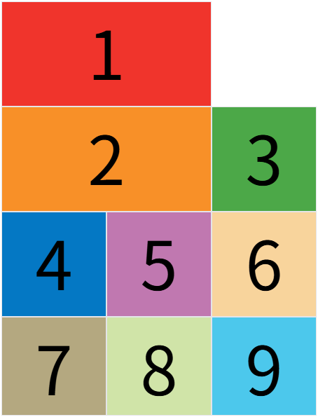
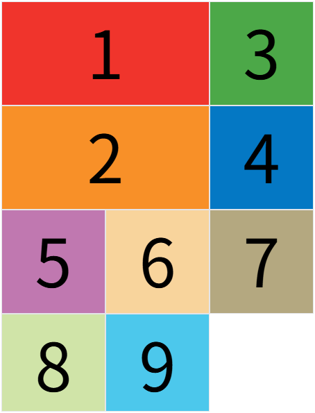
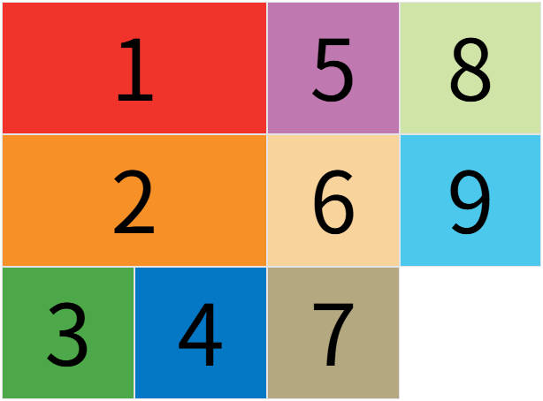
1 2 3 4 5 6 7 .container {justify-items : start | end | center | stretch;align-items : start | end | center | stretch;place-items : <align-items> <justify-items>;
1 2 3 4 5 6 .container {justify-content : start | end | center | stretch | space-around | space-between | space-evenly;align-content : start | end | center | stretch | space-around | space-between | space-evenly;place-content : <align-content> <justify-content>;
属性取值(以justify-content为例)的说明：
属性值
start
end
center
stretch
space-around
space-between
space-evenly
描述
对齐起点，默认
对齐终点
居中对齐
拉伸并占满宽度
分散对齐，两端间距减半
分散对齐，两边紧贴
分散对齐，间距相同
图示效果
这些属性可以用于控制单元格的起始行列与结束行列，实现项目跨越单元格(占据多个单元格)的布局。
设置为数值时，表示网格线的编号(从1开始)，即若行设置为4-6，列设置为2-5，面积为(6-4)*(5-4) = 2*3 = 6
如上图中的item8与item9，位置在九个单元格以外就是通过这些属性控制的：
1 2 3 4 5 6 7 .item-8 {background-color : #d0e4a9 ;grid-row-start : 4 ; grid-column-start : 2 ;
若项目出现重叠，可以通过z-index属性调整层级关系。
属性值可以是数值，也可以是网格线的名称，如grid-column-start: header-start;
可以使用span关键字，设置项目的跨越单元格，如 grid-column-start: span 2;，表示项目横跨两列。
1 2 3 4 5 6 7 8 9 10 .item {grid-column : <start-line> / <end-line>;grid-row : <start-line> / <end-line>;.item-1 {grid-column : 1 / 3 ; grid-row : 1 / 3 ;
1 2 3 4 .item-1 {grid-area : e;
此属性也可作为grid-row-start等四个属性的简写，格式为grid-area: <row-start> / <column-start> / <row-end> / <column-end>;
例：grid-area: 1 / 1 / 3 / 3;
1 2 3 4 5 6 7 .item {justify-self : start | end | center | stretch;align-self : start | end | center | stretch;place-self : <align-self> <justify-self>;
版式
单栏版式
双栏版式
三栏版式
综合版式(1+2+1)
综合版式(1+3+1)
图示
响应式设计(Responsive Web Design, RWD) 是一种网页开发方法，使网站能够自动适应不同屏幕尺寸的设备（PC、平板、手机等） ，提供最佳浏览体验。弹性布局 + 媒体查询 + 移动优先 + 灵活媒体 ，确保网站在任何设备上都能完美展现，能实现一套代码适配所有设备 ，降低维护成本；同时提升用户体验 ，避免手机端缩放、滚动问题；并且SEO友好 ，便于搜索引擎快速检索网页信息。
使用 弹性网格(Flex布局/Grid布局) 和 百分比宽度 替代固定像素布局，多使用相对单位进行布局。
1 2 3 4 5 .container {width : 100% ; max-width : 1200px ; margin : 0 auto;
视口即浏览器显示页面内容的屏幕区域 ,一般认为是浏览器的窗口大小。
通过设置视口大小，无论网页原始的分辨率如何，都能将其缩小显示在移动端的浏览器上，避免出现很长的滚动条。
在移动端浏览器中，存在三种视口：布局视口(layout viewport)、视觉视口(visual viewport)与理想视口(ideal viewport) 。
布局视口指整个文件的内容，与文档的宽度相关。
在移动设备上，为了避免桌面网页在小屏幕上显示过小，通常会默认设置一个宽布局视口（768px、980px、1024px等）。
通过<meta name="viewport">标签设置布局视口的宽度，例如width=device-width将其设置为设备屏幕的宽度。
布局视口决定了CSS像素的渲染范围，影响元的排列和缩放。
视觉视口是用户在屏幕上实际看到的区域，也就是浏览器窗口中显示的内容范围。
大小通常与设备屏幕的像素尺寸相关，且会随着用户的缩放而改变。
例如，放大页面时，视觉视口变小，显示的布局视口内容减少；缩小页面时，视觉视口变大，显示更多内容。
反映用户当前的可见区域，与缩放操作直接相关。
理想视口是设备的最佳视口尺寸，通常等于设备的屏幕宽度（以设备独立像素为单位）。
用于让网页在移动设备上以最自然、最舒适的方式显示。
通过设置<meta name="viewport" content="width=device-width, initial-scale=1.0">，可以让布局视口匹配理想视口，避免页面缩放或水平滚动。
可以为移动端优化页面，提供最佳用户体验。
通用格式：<meta name="viewport" content="属性1 = 值1, 属性2 = 值2, …">
name属性值为viewport，表明此标签用于设置视口content属性用于设定布局视口的相关属性：
width: 用于设定布局视口的宽度，属性值为正整数(px)或device-width;设置为后者时，布局视口的宽度等于屏幕宽度(即理想视口)。height: 用户设定布局视口的高度，属性值为正整数(px)或device-height;设置为后者时，布局视口的高度等于屏幕高度(即理想视口)。user-scalable: 是否允许手动缩放，默认为yes，可设置为no。initial-scale: 网页初始缩放值，取值范围0.0 ~ 10.0，一般取1.0，表示网页的原大小。maximum-scale: 设置缩放的最大比例，取值范围0.0 ~ 10.0minimum-scale: 设置缩放的最小比例，取值范围0.0 ~ 10.0
用于根据设备的特性（如屏幕宽度、分辨率、方向等）应用不同的样式，以实现响应式设计。
通过@media规则，检测设备的特定条件（如min-width、max-width、屏幕方向等），然后应用对应的CSS样式，常用于适配不同屏幕尺寸的设备。
语法：
1 @media 媒体类型 and | not | only (条件) { }
参数说明：
媒体类型：取值有all(所有设备)、screen(电脑屏幕)、print(打印机)、speech(屏幕阅读器)
条件常用取值：max-width、min-width、max-device-width、min-device-width等
例：当输出设备中的页面最大可见区域宽度为900px时，body元素背景颜色切换为蓝色：
1 2 3 4 5 @media screen and (max-width : 900px ) {body {background-color : blue;
在实际网页制作中，通常根据不同的屏幕宽度创建不同的样式表文件，然后在网页头部标签中添加<link>标签，使网页根据屏幕宽度响应式加载不同的样式文件, 语法格式如下：
1 <link rel ="stylesheet" type ="text/css" media ="媒体类型 and | not | only (条件)" href ="CSS文件路径" />
备注：使用<meta>标签的media属性让网页加载新的样式表文件时，可能需要对某些元素重复设置样式，应该尽量使用优先级较高的选择器，减少通配符或者大范围选择器的使用。
为图片设置max-width: 100%; height: auto;的属性，防止大小超过容器或父元素的区域
为移动端横屏与竖屏应用不同的样式
1 2 3 4 5 6 7 8 9 @media (max-width : 767px ) {.menu { display : none; } @media (min-width : 768px ) and (max-width : 1023px ) {.sidebar { width : 30% ; }
早期的CSS无法实现变形效果，只能通过JavaScript实现。CSS3中新增了transform属性用于设置元素的2D和3D变形效果。
1 transform : none | transform-functions
默认值为none(无变形效果)，transform-functions表示变形方法，用于设置元素的2D或3D变形效果
变形方法可以有多个，用空格隔开。
以元素中心为原点创建一个平面直角坐标系，取右下方为正方向，2D变形主要有四种方法：平移、缩放、旋转和倾斜 。
1 transform : translate (x轴偏移量, y轴偏移量);
参数可以为正值与负值，单位可以取px等绝对单位，也可以是%等相对单位。
若只设置一个参数，y轴偏移量默认为0。
1 transform : translate (宽度缩放倍数, 高度缩放倍数);
参数值大于1表示放大，小于1表示缩小。
若只设置一个参数，表示宽高以相同倍数缩放。
参数为负时，元素会有翻转效果。
1 transform : rotate (旋转角度);
旋转角度以°为单位，正值表示顺时针旋转，负值表示逆时针旋转。
1 transform : skew (y轴倾斜角度, x轴倾斜角度);
与旋转方法的参数规则相同，以°为单位，正顺负逆。
若只设置一个值，元素绕y轴倾斜，第二个值默认为0。
以元素中心为原点，创建三维直角坐标系
3D变形主要沿元素的x,y,z三轴进行变化
3D变形主要有三种，分别为平移、缩放与旋转 。
1 transform : translate3d (x轴偏移量, y轴偏移量, z轴偏移量);
x、y轴上的偏移量可以为百分比，但是z轴不允许设置百分比单位。三个值均可取负。
z轴偏移量越大，元素看起来越靠近浏览者，反之则相反。
1 transform : Scale3d (x方向缩放比例, y方向缩放比例, z方向缩放比例);
参数值大于1表示放大，小于1表示缩小。
若只设置一个参数，表示宽高以相同倍数缩放。
参数为负时，元素会有翻转效果。
1 2 transform : rotateX (10deg ) | rotateY (10deg ) | rotateZ (10deg );
旋转角度以°为单位，正值表示顺时针旋转，负值表示逆时针旋转。
“设置3D变形时，—般需要为设置变形的元素的父元素设置透视属性(perspective)。透视是绘画理论术语，是在平面上根据一定原理用线条来显示物体的空间位置、轮廓和 投影的科学，根据透视关系能够绘制出带有空间结构的透视图，生活中常说的‘近大远 小’就是其中的一个简单的原理。CSS3中的透视属性可以理解为设置‘近大远小’的程度，属性值越小靠近人眼的一侧就显示得越大，一般设置为300px。该属性的默认属性值为0，即不显示透视，此时3D变形效果类似于2D变形效果。” ——《Web前端技术》P184
1 transition-property : none | all | property;
none:默认值，不使用过渡效果。all:为所有属性设置过渡效果。property:应用过渡效果的具体属性名称，多个值之间用空格隔开。
1 transition-duration : 过渡时间;
取值一般为过渡的时间，以秒(s)或毫秒(ms)为单位，默认值为0。
若不设置过渡的时间，会直接显示变形的最终效果，变形的过程几乎看不到。
1 transition-timing-function : liner | ease | ease-in | ease-out | ease-in-out | cubic-bezier (n, n, n, n);
liner：线性过渡，即匀速 进行过渡。ease：平滑过渡，慢-快-慢 的过渡效果，类似汽车快速启动-逐渐减速 过程，适合快速响应 (如按钮悬停)的过渡场景。ease-in：慢-快 的过渡效果。ease-out：快-慢 的过渡效果。ease-in-out：慢-快-慢 的过渡效果，类似于垂直电梯的缓慢启动-匀速上升-缓慢减速 过程，适合平滑连贯 (如页面切换)的过渡场景。cubic-bezier(n, n, n, n)：贝赛尔曲线,用于精确控制过渡效果的曲线，n取值范围为0 ~ 1。
打开开发人员工具中的贝赛尔曲线编辑器：
在编辑器中调整速度曲线或者使用下方的一些预设进一步微调
调节完成后，关闭编辑器窗口并将新的cubic-bezier属性值粘贴到源文件，完成速度曲线的修改。
取值一般为延迟的时间值，以秒(s)或毫秒(ms)为单位，默认值为0。
设定为负值时，会截断过渡时间开头的一部分。如duration设置为5s，delay设置为-2s时，过渡效果会在触发后延迟2s，并从动画的第二秒开始过渡。
1 transition : property值 duration值 timing-function值 delay值;
在CSS中，常通过鼠标事件触发过渡效果，如单机按钮、指针悬浮、指针经过等，用于提高网页的美观程度与可交互性。
结合伪类选择器 :hover(悬停/经过)、:active(点击并按住)、:focus(获得焦点)、:checked(表单控件选中) 设定元素在特定情况下的过渡效果
使用媒体查询 触发过渡效果，如下所示：
1 2 3 4 5 6 7 @media only screen and (max-width : 420px ;) { div {width : 100px ;transition : width is;
使用transition属性只能通过设置开始与结束的过渡效果，无法精准控制过渡中途的效果。关键帧 可以制作变化多样的动画效果。
使用@keyframes规则定义关键帧，格式如下：
1 @keyframes 动画名称 { 时间位置{ CSS样式 } }
时间位置即动画时长的百分比，取值为1% ~ 100%，也可以使用from关键字(表示0%)、to关键字(表示100%)表示。
1 animation-name : 名称 | none;
参数为动画的名称，对应想要应用的@keyframes动画名称。
参数为none时，表示不应用或取消此动画。
1 animation-timing-function : liner | ease | ease-in | ease-out | ease-in-out | cubic-bezier (n, n, n, n);
liner：线性过渡，即匀速 进行过渡。ease：平滑过渡，慢-快-慢 的过渡效果，类似汽车快速启动-逐渐减速 过程，适合快速响应 (如按钮悬停)的过渡场景。ease-in：慢-快 的过渡效果。ease-out：快-慢 的过渡效果。ease-in-out：慢-快-慢 的过渡效果，类似于垂直电梯的缓慢启动-匀速上升-缓慢减速 过程，适合平滑连贯 (如页面切换)的过渡场景。cubic-bezier(n, n, n, n)：贝赛尔曲线,用于精确控制过渡效果的曲线，n取值范围为0 ~ 1。
steps(帧数, start | end)方法，用于设置两个关键帧之间插入多少帧补间动画
satrt表示最后一帧是补间动画的开始，end表示第一帧是补间动画的开始。不使用steps方法时，浏览器自动设置补间动画。
取值一般为延迟的时间值，以秒(s)或毫秒(ms)为单位，默认值为0。
设定为负值时，会截断过渡时间开头的一部分。如duration设置为5s，delay设置为-2s时，过渡效果会在触发后延迟2s，并从动画的第二秒开始过渡。
1 animation-iteration-count : 播放次数 | infinite;
播放次数默认为1。
设置为infinite关键字实现循环播放。
1 animation-direction : normal | alternate;
noraml:默认值，表示正常播放。alternate:动画先正常播放，然后倒放一遍，并按此规律循环播放("折返跑"效果)。
1 animation-play-state : paused | running;
1 animation-fill-mode : none | forwards (保持结束状态) | backwards (保持初始状态) | both (播放前保持初始，播放后保持结束);
类似于胶片电影 的原理，将动画逐帧切割后的图片排成一行，组成一个很宽的图片列；
通过控制图片的位置，使其在容器中每过一小段时间显示下一帧的内容；
最后应用循环效果，实现动画的逐帧播放。
1 2 3 4 5 6 7 8 9 10 11 12 13 14 15 16 17 18 19 20 21 22 23 24 25 26 27 28 29 30 31 <!DOCTYPE html > <html > <head > <meta charset ="utf-8" > <title > 动画示例</title > <style > div { width : 125px ; height : 125px ; margin-left : 50px ; margin-top : 50px ; background : url (img/bgp.jpg ) no-repeat 0 0 ; animation : move 1s steps (8 , end) infinite; } @keyframes move { 0% { background-position : 0 0 ; } 100% { background-position : -1000px 0 ; } } </style > </head > <body > <div > </div > </body > </html >